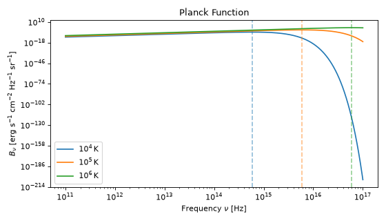
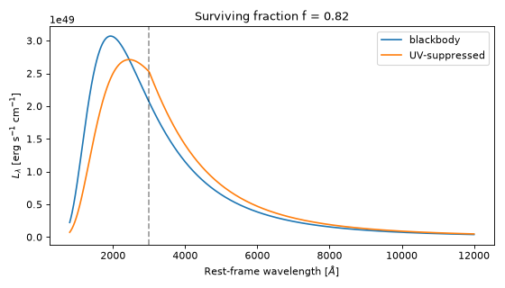

Blackbody Radiation#
The trilobite.radiation.blackbody module provides the Planck function and
related thermal-radiation utilities. It follows the standard two-level API pattern
used throughout Trilobite: private _*_cgs kernels operate on plain NumPy arrays
with no unit overhead (suitable for MCMC hot loops), and public wrappers accept and
return Quantity objects for interactive use.
The module also provides a UV-suppressed (modified) blackbody, in which the flux below a cutoff wavelength is suppressed. This is the standard description of the spectra of superluminous supernovae, and is documented below in UV-Suppressed (Modified) Blackbody.
Quick Start#
The example below plots \(B_\nu\) for three representative temperatures and marks the Wien peak of each.
import numpy as np
import matplotlib.pyplot as plt
import astropy.units as u
from trilobite.radiation.blackbody import planck_B, wien_peak_frequency
nu = np.geomspace(1e11, 1e17, 500) * u.Hz
temperatures = [1e4, 1e5, 1e6] * u.K
labels = [r"$10^4\,\mathrm{K}$", r"$10^5\,\mathrm{K}$", r"$10^6\,\mathrm{K}$"]
fig, ax = plt.subplots(figsize=(7, 4))
for T, label in zip(temperatures, labels):
B = planck_B(T, nu=nu)
line, = ax.loglog(nu.value, B.value, label=label)
nu_peak = wien_peak_frequency(T)
B_peak = planck_B(T, nu=nu_peak)
ax.axvline(nu_peak.value, color=line.get_color(), linestyle="--", alpha=0.5)
ax.set_xlabel(r"Frequency $\nu$ [Hz]")
ax.set_ylabel(r"$B_\nu$ [erg s$^{-1}$ cm$^{-2}$ Hz$^{-1}$ sr$^{-1}$]")
ax.set_title("Planck Function")
ax.legend()
fig.tight_layout()
(Source code, png, hires.png, pdf)



Theory#
Planck Function#
The Planck function gives the specific intensity (spectral radiance) of a blackbody in thermal equilibrium at temperature \(T\):
in units of \(\mathrm{erg\,s^{-1}\,cm^{-2}\,Hz^{-1}\,sr^{-1}}\). The equivalent expression per unit wavelength is:
in units of \(\mathrm{erg\,s^{-1}\,cm^{-3}\,sr^{-1}}\). Both are related by \(B_\lambda = B_\nu \cdot c / \lambda^2\).
Numerical stability. The denominator \(e^x - 1\) is evaluated using
numpy.expm1 to avoid cancellation errors in the Rayleigh-Jeans limit
(\(x \ll 1\)).
Wien Displacement Law#
Differentiating \(B_\nu\) with respect to \(\nu\) and setting the result to zero yields the transcendental equation \(x_{\rm peak} = 3(1 - e^{-x_{\rm peak}})\), whose solution is \(x_{\rm peak} \approx 2.8214\). The peak frequency is therefore:
Similarly, the peak wavelength of \(B_\lambda\) satisfies:
Note that \(\nu_{\rm peak}\) and \(\lambda_{\rm peak}\) are not related by \(c = \lambda \nu\) because they are maxima of different representations of the spectrum.
Stefan-Boltzmann Law#
Integrating the Planck function over all frequencies and the outgoing hemisphere gives the bolometric radiative flux from a blackbody surface:
UV-Suppressed (Modified) Blackbody#
The optical and near-infrared colors of many supernovae are well described by a blackbody, but their ultraviolet spectra are fainter than a blackbody would be, because of blended absorption lines and metal-line blanketing. For superluminous supernovae the deficit is large and well characterized. A simple description, used by Nicholl et al.[1] in the MOSFiT code, multiplies the blackbody by a transmission that falls linearly below a cutoff wavelength \(\lambda_{\rm cut}\) (about 3000 Angstrom for superluminous supernovae):
The transmission is 100% at the cutoff and zero at \(\lambda = 0\). Here \(\lambda\) is the rest-frame wavelength. The suppressed flux is not lost: the spectrum is renormalised so that it carries the same bolometric flux as the blackbody, \(L = 4\pi R^2 \sigma_{\rm SB} T^4\), which means that the flux at longer wavelengths is raised. The renormalisation is \(1/f(T)\), where
is the fraction of the blackbody flux that survives. The series is exact, converges geometrically, and is evaluated with 256 terms, which is accurate to \(10^{-14}\) for \(T \lesssim 3\times10^5\) K at a cutoff of 3000 Angstrom. The spectrum of the modified blackbody is therefore
Three properties are useful to know:
The effect grows with temperature. At 8000 K the surviving fraction is \(f = 0.97\), and the modified blackbody differs little from a blackbody; at 15000 K it is 0.82, and at 30000 K it is 0.52.
Only the far UV is dimmer. Because of the renormalisation, the spectrum is brighter than the blackbody wherever \(\lambda/\lambda_{\rm cut} > f(T)\), which includes the whole range around and above the cutoff, by the factor \(1/f\) at and above the cutoff wavelength.
The photosphere is unchanged. The temperature and radius are still those of the Stefan-Boltzmann law. Only the spectrum emitted at them differs.
With a redshift, the suppression is applied at the rest-frame wavelength, \(\lambda' = \lambda_{\rm obs}/(1+z)\), and the observed flux density is that of the blackbody, with the same factors, times \((1+z)\) in frequency or \(1/(1+z)\) in wavelength, which conserves the bolometric flux, \(L/4\pi D_L^2\).
Usage Guide#
Per-Frequency Specific Intensity#
Use planck_B() to evaluate \(B_\nu\)
at an array of frequencies:
import numpy as np
import astropy.units as u
from trilobite.radiation.blackbody import planck_B
nu = np.geomspace(1e13, 1e17, 200) * u.Hz
T = 1e5 * u.K
B = planck_B(T, nu=nu) # shape (200,), unit erg / (s cm**2 Hz sr)
Per-Wavelength Specific Intensity#
Use planck_B() with the lam keyword to evaluate \(B_\lambda\):
import numpy as np
import astropy.units as u
from trilobite.radiation.blackbody import planck_B
lam = np.geomspace(1e-6, 1e-3, 200) * u.cm # UV through IR
T = 5778.0 * u.K
B = planck_B(T, lam=lam) # unit erg / (s cm**3 sr)
Wien Peak#
wien_peak_frequency() and
wien_peak_wavelength() return the peak
of \(B_\nu\) and \(B_\lambda\), respectively:
from astropy import units as u
from trilobite.radiation.blackbody import wien_peak_frequency, wien_peak_wavelength
T = 5778.0 * u.K
print(wien_peak_frequency(T).to(u.THz)) # ~339 THz for the Sun
print(wien_peak_wavelength(T).to(u.nm)) # ~501 nm for the Sun
Bolometric Flux#
stefan_boltzmann_flux() returns
\(F = \sigma_{\rm SB} T^4\):
from astropy import units as u
from trilobite.radiation.blackbody import stefan_boltzmann_flux
F = stefan_boltzmann_flux(5778.0 * u.K)
print(F.to(u.L_sun / u.R_sun**2)) # should be ~1 L_sun R_sun^-2
Observed Flux and Luminosity of a Spherical Source#
planck_flux() gives the flux density observed from a spherical blackbody of
radius \(R\), and planck_luminosity() its specific luminosity. Both take
the keyword lambda_cut to use the modified blackbody instead. It is the rest-frame cutoff wavelength; when it is
omitted, the spectrum is a plain blackbody.
import numpy as np
import astropy.units as u
from trilobite.radiation.blackbody import planck_flux, planck_luminosity
T, R = 15000 * u.K, 5e15 * u.cm
nu = np.geomspace(3e14, 3e15, 100) * u.Hz # observer frame
# Observed flux density, with and without the UV suppression
plain = planck_flux(T, R, nu=nu, redshift=0.1)
modified = planck_flux(T, R, nu=nu, redshift=0.1, lambda_cut=3000 * u.AA)
# The specific luminosity of the source, in the rest frame
lam = np.geomspace(1000, 10000, 100) * u.AA
L_lam = planck_luminosity(T, R, lam=lam, lambda_cut=3000 * u.AA)
Both functions conserve the bolometric flux, so that integrating either spectrum over frequency gives the same \(L/4\pi D_L^2\) (and \(L = 4\pi R^2 \sigma_{\rm SB} T^4\) for the luminosity).
The figure compares the two spectra of a 15000 K source.
import numpy as np
import matplotlib.pyplot as plt
import astropy.units as u
from trilobite.radiation.blackbody import planck_luminosity, planck_cutoff_fraction
T, R, cut = 15000 * u.K, 5e15 * u.cm, 3000 * u.AA
lam = np.geomspace(800, 12000, 400) * u.AA
fig, ax = plt.subplots(figsize=(7, 4))
ax.plot(lam.value, planck_luminosity(T, R, lam=lam).value, label="blackbody")
ax.plot(lam.value, planck_luminosity(T, R, lam=lam, lambda_cut=cut).value, label="UV-suppressed")
ax.axvline(cut.value, color="k", ls="--", alpha=0.4)
ax.set_xlabel(r"Rest-frame wavelength [$\AA$]")
ax.set_ylabel(r"$L_\lambda$ [erg s$^{-1}$ cm$^{-1}$]")
ax.set_title(f"Surviving fraction f = {planck_cutoff_fraction(T, cut):.2f}")
ax.legend()
fig.tight_layout()
(Source code, png, hires.png, pdf)



Surviving Fraction#
planck_cutoff_fraction() returns the fraction \(f(T)\) of the blackbody flux that
survives the suppression, which tells you how different the modified spectrum is from a blackbody:
import astropy.units as u
from trilobite.radiation.blackbody import planck_cutoff_fraction
planck_cutoff_fraction([8000, 15000, 30000] * u.K, 3000 * u.AA)
# array([0.9747, 0.8162, 0.5223])
CGS Kernels#
The CGS kernels take the cutoff as the keyword lambda_cut, in cm, with 0 meaning no suppression:
_log_specific_flux_fnu_cgs(),
_log_specific_flux_flambda_cgs(),
_log_specific_luminosity_fnu_cgs() and
_log_specific_luminosity_flambda_cgs(). This is what the optical supernova models of
Arnett Engines call.
import numpy as np
from trilobite.radiation.blackbody import _log_specific_flux_fnu_cgs
log_nu = np.log(np.geomspace(3e14, 3e15, 100)) # observer frame, Hz
log_fnu = _log_specific_flux_fnu_cgs(
log_nu, np.log(1.5e4), np.log(5e15), np.log(1e27), z=0.1, lambda_cut=3.0e-5
)
Using CGS Kernels Directly#
For performance-critical code (e.g. inside an MCMC loop), import the private CGS functions directly and pass plain NumPy arrays:
import numpy as np
from trilobite.radiation.blackbody import _log_planck_fnu_cgs
log_nu = np.log(np.geomspace(1e13, 1e17, 200)) # natural log, Hz
log_T = np.log(1e5) # natural log, K
log_B = _log_planck_fnu_cgs(log_nu, log_T) # plain ndarray, log erg / (s cm**2 Hz sr)
B = np.exp(log_B)
Important
The CGS kernels accept only plain NumPy arrays and Python floats. Passing an
Quantity will raise an error. No unit checking is
performed — it is the caller’s responsibility to pass values in CGS.
API Reference#
- trilobite.radiation.blackbody.planck_B(T: _UnitBearingArrayLike, *, nu: _UnitBearingArrayLike = None, lam: _UnitBearingArrayLike = None) Quantity[source]
Planck spectral radiance \(B_\nu\) or \(B_\lambda\).
- Parameters:
- Returns:
\(B_\nu\) in \(\mathrm{erg\,s^{-1}\,cm^{-2}\,Hz^{-1}\,sr^{-1}}\) when nu is given, or \(B_\lambda\) in \(\mathrm{erg\,s^{-1}\,cm^{-2}\,cm^{-1}\,sr^{-1}}\) when lam is given.
- Return type:
- trilobite.radiation.blackbody.planck_surface_flux(T: _UnitBearingArrayLike, *, nu: _UnitBearingArrayLike = None, lam: _UnitBearingArrayLike = None) Quantity[source]
Outward specific flux \(\pi B_\nu\) or \(\pi B_\lambda\) per unit area of a blackbody surface.
- Parameters:
- Returns:
\(F_\nu\) in \(\mathrm{erg\,s^{-1}\,cm^{-2}\,Hz^{-1}}\) when nu is given, or \(F_\lambda\) in \(\mathrm{erg\,s^{-1}\,cm^{-2}\,cm^{-1}}\) when lam is given.
- Return type:
- trilobite.radiation.blackbody.planck_flux(T: _UnitBearingArrayLike, R: _UnitBearingArrayLike, *, nu: _UnitBearingArrayLike = None, lam: _UnitBearingArrayLike = None, redshift: float = None, luminosity_distance: _UnitBearingArrayLike = None, angular_diameter_distance: _UnitBearingArrayLike = None, proper_distance: _UnitBearingArrayLike = None, cosmology: Cosmology = None, lambda_cut: _UnitBearingScalarLike = None) Quantity[source]
Observed specific flux density \(f_\nu\) or \(f_\lambda\) from a spherical blackbody.
With
lambda_cutthe blackbody has a suppressed UV (seeplanck_cutoff_fraction()and UV-Suppressed (Modified) Blackbody); the bolometric flux is the same as that of the plain blackbody.- Parameters:
T (
Quantity) – Blackbody temperature. Convertible to K.R (
Quantity) – Source radius. Convertible to cm.nu (
Quantity, optional) – Observer-frame frequency. Convertible to Hz. Mutually exclusive with lam.lam (
Quantity, optional) – Observer-frame wavelength. Convertible to cm. Mutually exclusive with nu.redshift (
float, optional) – Cosmological redshift of the source.luminosity_distance (
Quantity, optional) – Luminosity distance to the source.angular_diameter_distance (
Quantity, optional) – Angular diameter distance to the source.proper_distance (
Quantity, optional) – Proper (comoving radial) distance to the source.cosmology (
Cosmology, optional) – Cosmology used to convert between redshift and distance measures. If not provided, the configured default cosmology is used.lambda_cut (
Quantity, optional) – Rest-frame wavelength below which the spectrum is suppressed linearly, as \(\min(1, \lambda/\lambda_{\rm cut})\), and then renormalised to conserve the luminosity. Convertible to cm. If not provided (default), the spectrum is a plain blackbody.
- Returns:
\(f_\nu\) in \(\mathrm{erg\,s^{-1}\,cm^{-2}\,Hz^{-1}}\) when nu is given, or \(f_\lambda\) in \(\mathrm{erg\,s^{-1}\,cm^{-2}\,cm^{-1}}\) when lam is given.
- Return type:
Notes
Exactly one of nu or lam and exactly one of redshift, luminosity_distance, angular_diameter_distance, or proper_distance must be provided.
- trilobite.radiation.blackbody.planck_luminosity(T: _UnitBearingArrayLike, R: _UnitBearingArrayLike, *, nu: _UnitBearingArrayLike = None, lam: _UnitBearingArrayLike = None, lambda_cut: _UnitBearingScalarLike = None) Quantity[source]
Specific luminosity \(L_\nu = 4\pi^2 R^2 B_\nu\) or \(L_\lambda = 4\pi^2 R^2 B_\lambda\).
With
lambda_cutthe blackbody has a suppressed UV (seeplanck_cutoff_fraction()and UV-Suppressed (Modified) Blackbody); the bolometric luminosity is \(4\pi R^2 \sigma_{\rm SB} T^4\) either way.- Parameters:
T (
Quantity) – Temperature. Convertible to K.R (
Quantity) – Source radius. Convertible to cm.nu (
Quantity, optional) – Frequency. Convertible to Hz. Mutually exclusive with lam.lam (
Quantity, optional) – Wavelength. Convertible to cm. Mutually exclusive with nu.lambda_cut (
Quantity, optional) – Wavelength below which the spectrum is suppressed linearly, as \(\min(1, \lambda/\lambda_{\rm cut})\), and then renormalised to conserve the luminosity. Convertible to cm. If not provided (default), the spectrum is a plain blackbody.
- Returns:
\(L_\nu\) in \(\mathrm{erg\,s^{-1}\,Hz^{-1}}\) when nu is given, or \(L_\lambda\) in \(\mathrm{erg\,s^{-1}\,cm^{-1}}\) when lam is given.
- Return type:
- trilobite.radiation.blackbody.planck_cutoff_fraction(T: _UnitBearingArrayLike, lambda_cut: _UnitBearingScalarLike) ndarray[source]
Fraction of a blackbody’s bolometric flux that survives a linear UV suppression.
The suppression multiplies the spectrum by \(\min(1, \lambda/\lambda_{\rm cut})\): it is 100% at the cutoff wavelength and falls linearly to zero at \(\lambda = 0\). The surviving fraction
\[f(T) = \frac{\int B_\lambda \min(1, \lambda/\lambda_{\rm cut})\,d\lambda}{\int B_\lambda\,d\lambda}\]is evaluated exactly (see UV-Suppressed (Modified) Blackbody). A spectrum that has been renormalised to conserve the luminosity is the suppressed spectrum divided by this fraction.
- Parameters:
- Returns:
The surviving fraction, between 0 and 1. It falls from 1 as the temperature rises: the hotter the blackbody, the more of its flux is in the suppressed UV. It is accurate to \(10^{-14}\) for \(T \lesssim 3\times10^5\) K at \(\lambda_{\rm cut} = 3000\) Angstrom.
- Return type:
Examples
>>> import astropy.units as u >>> from trilobite.radiation.blackbody import ( ... planck_cutoff_fraction, ... ) >>> planck_cutoff_fraction( ... [8000, 15000, 30000] * u.K, 3000 * u.AA ... ) array([0.97..., 0.81..., 0.52...])
- trilobite.radiation.blackbody.wien_peak_frequency(T: _UnitBearingArrayLike) Quantity[source]
Peak frequency \(\nu_\mathrm{peak}\) from Wien’s displacement law.
- trilobite.radiation.blackbody.wien_peak_wavelength(T: _UnitBearingArrayLike) Quantity[source]
Peak wavelength \(\lambda_\mathrm{peak}\) from Wien’s displacement law.
- trilobite.radiation.blackbody.stefan_boltzmann_flux(T: _UnitBearingArrayLike) Quantity[source]
Bolometric radiative flux \(F = \sigma_\mathrm{SB} T^4\) per unit area of a blackbody surface.